A VFX Shot
// complete showreel belowAnimation and Visual Effects Showreel
This is a showreel of my work as a visual effects artist (2009-2011).
Download high resolution quicktime (right click to save):
Dynamic Colors
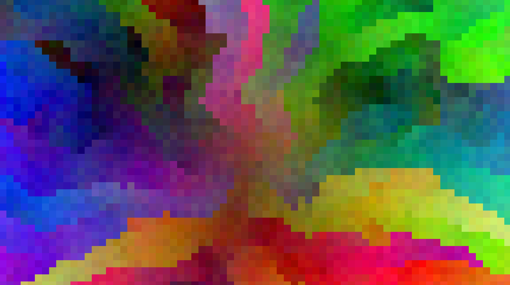
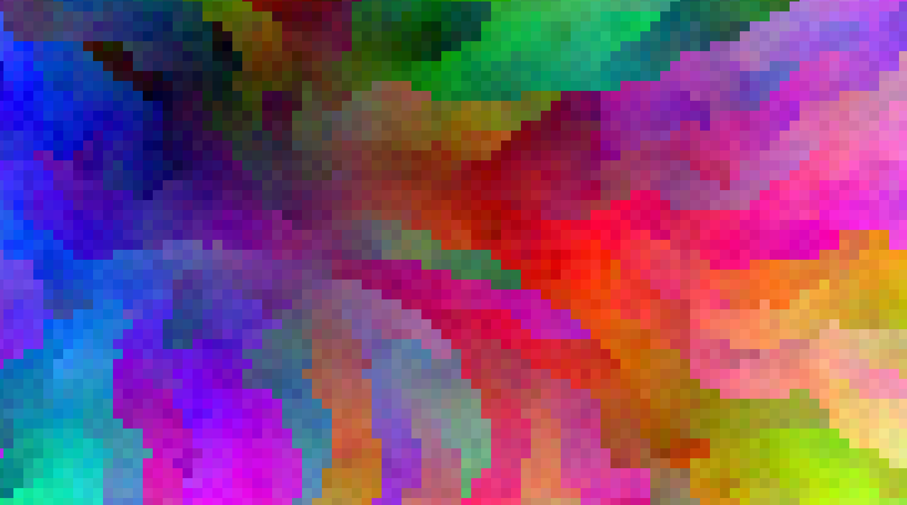
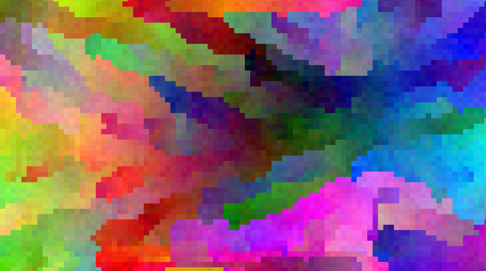
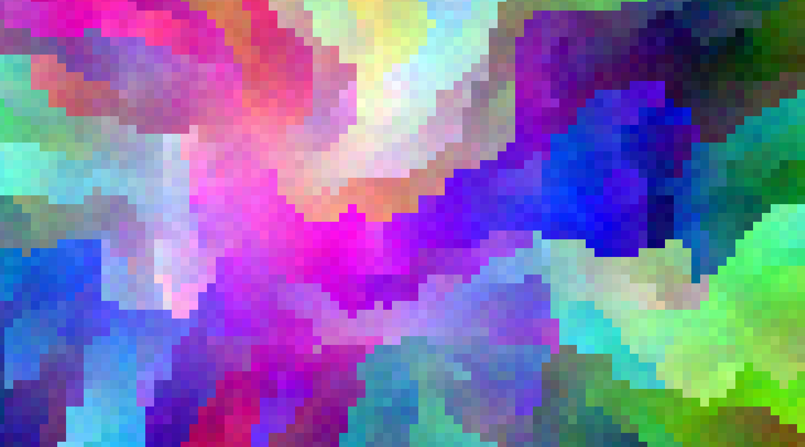
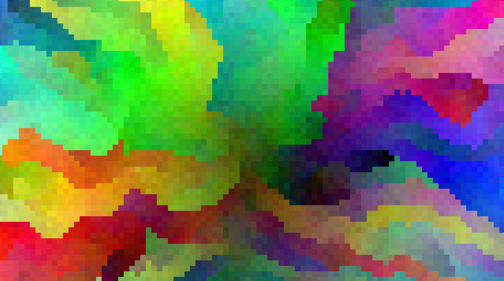
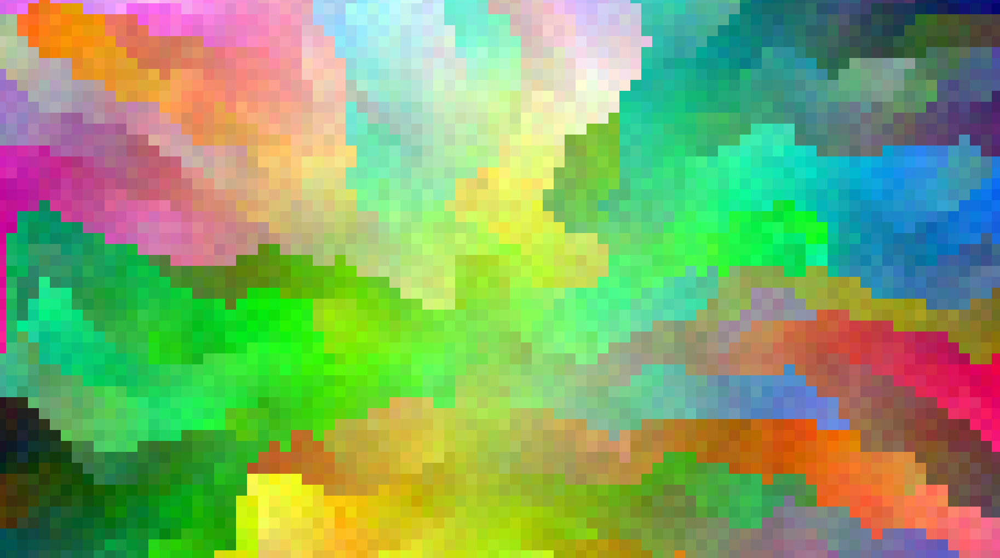
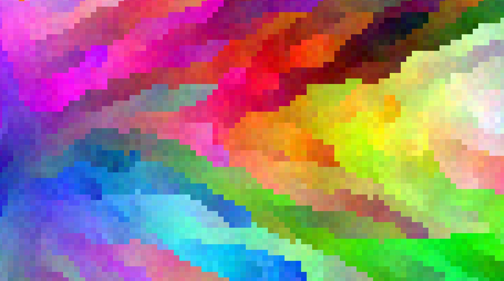
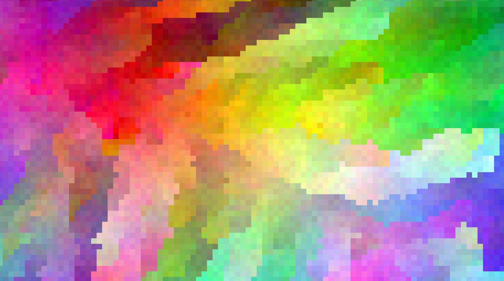
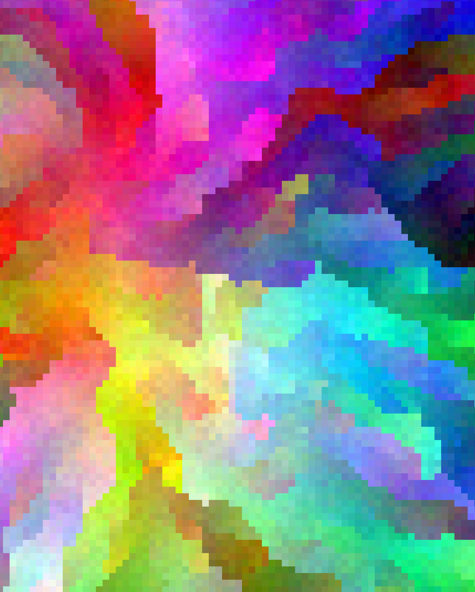
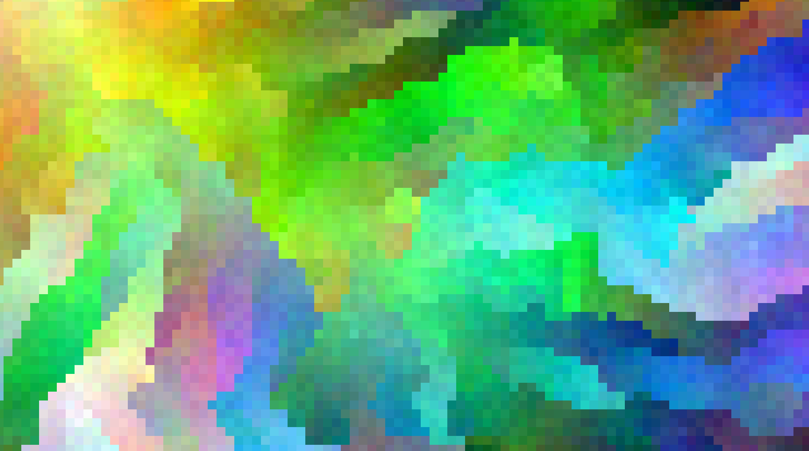
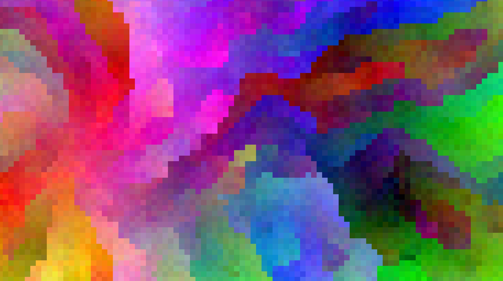
In Dynamic Maps, we generate a dynamic map of shapes or images on an endless 2D canvas, which maintains its continuity as the user moves around the map. Here, I ran the algorithm to generate a very large map of colors, starting from a random seed color. The map is not continuous due to the large number of colors displayed, yet the results are fascinating to look at, and could make a nice background image for your desktop or mobile :)
Click on each image to view or download the full size image.
Ray Tracing
I created a simple ray tracing exercise for the Computer Graphics course at Tel Aviv University. Below are images that were created with the ray tracer which I find interesting.
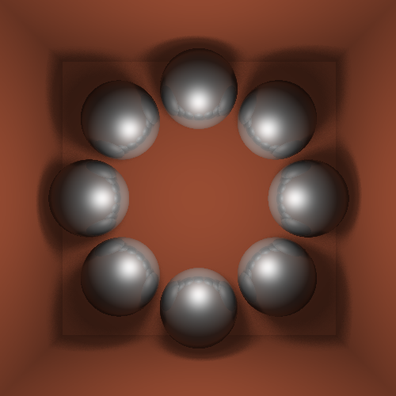
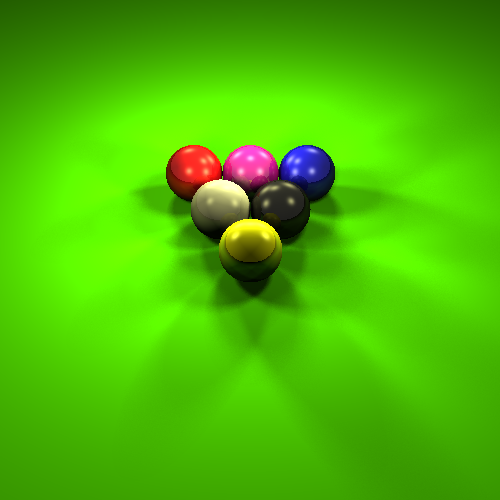

Deep Dream
These are results of Google's Deep Dream filters on a few of my photos.
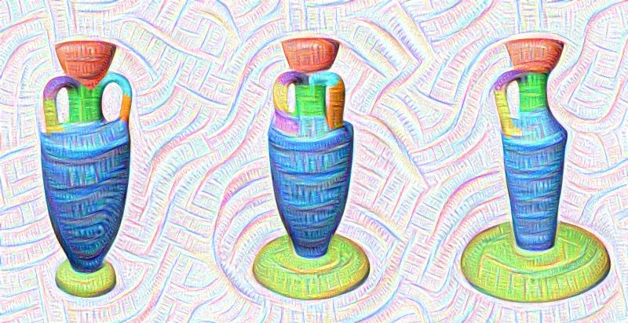
Deep Dream of vases rendered for SHED.
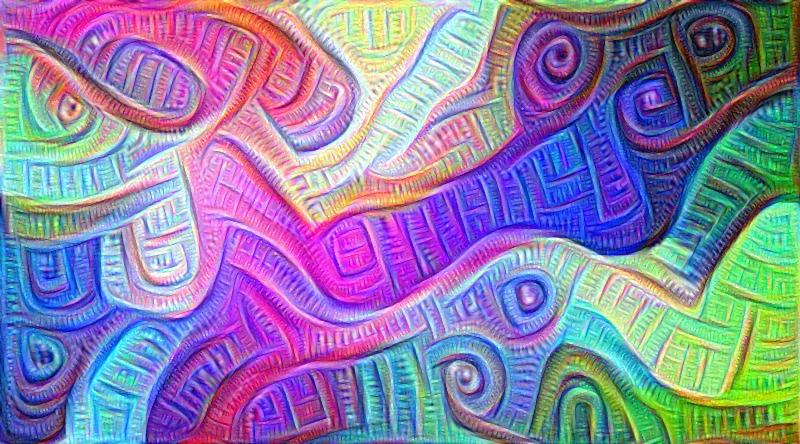
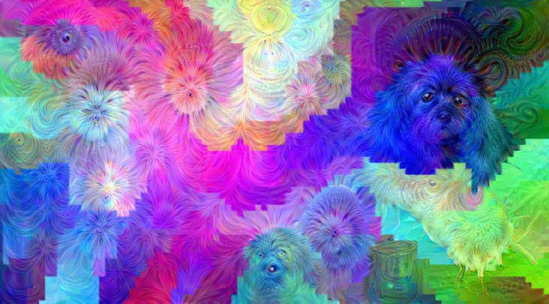
Deep Dream of Dynamic Colors (see above).
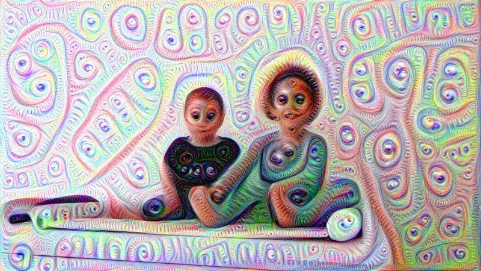
Deep Dream of my kids :)